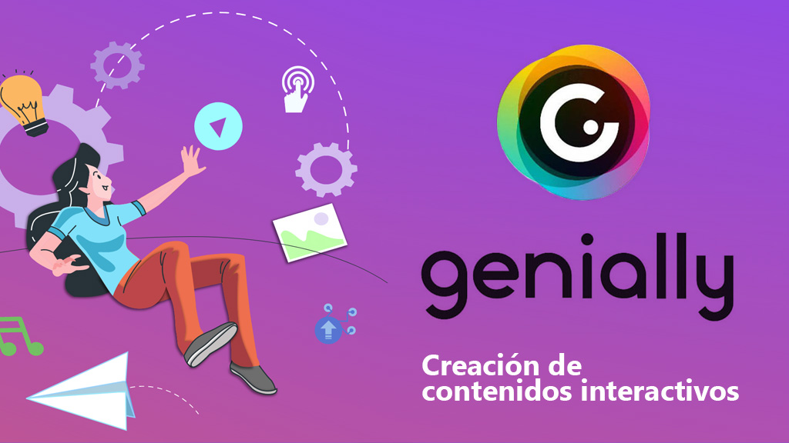
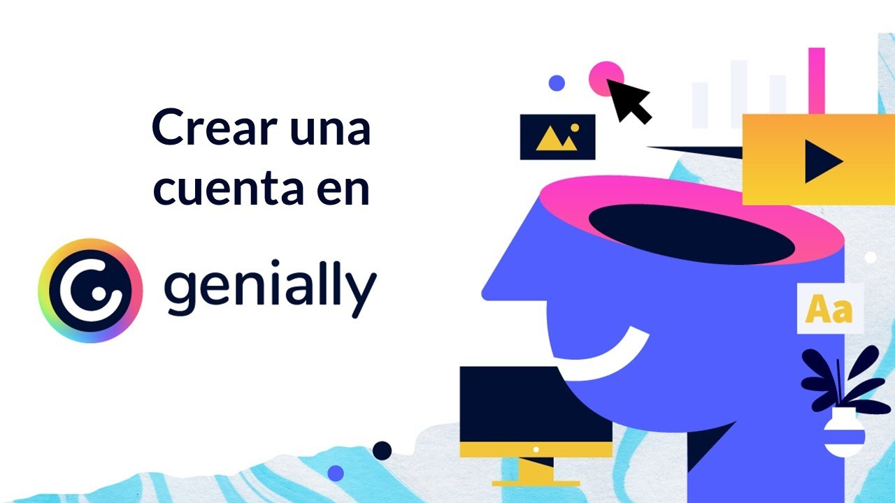
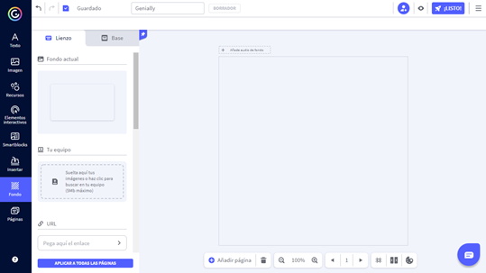
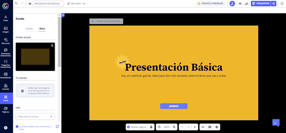
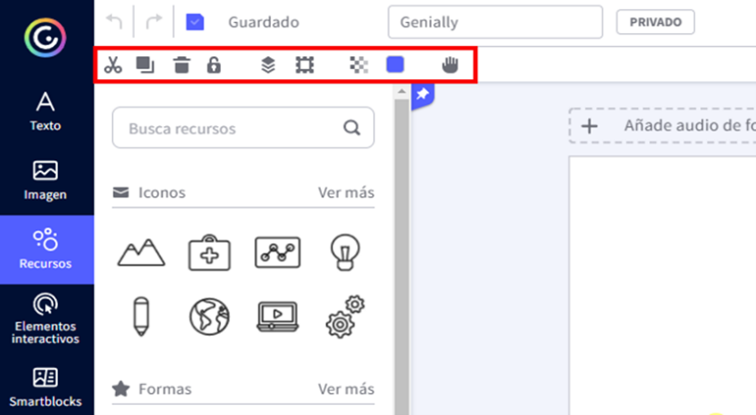
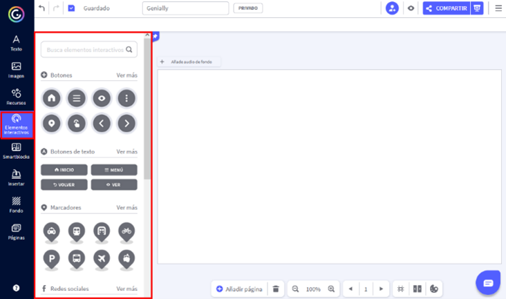
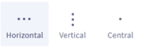
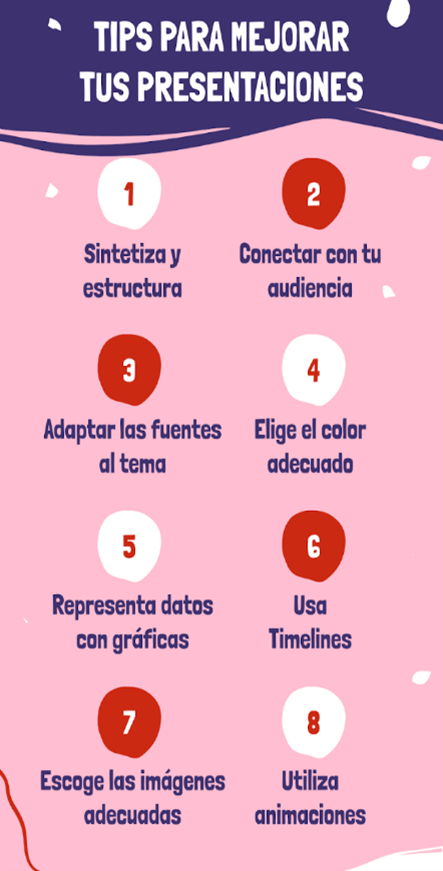

Presentaciones en Genially

!Buenas!, somos "Design Genially", un
micro curso orientado especialmente hacia los alumnos de 1° año del Bachillerato Técnico en
Informática, pero tambien a todo aquel que este interesado en participar con el objectivo de
impartir conocimiento para la creación de presentaciones mediante la herramienta Genially.
En este micro curso encontraras información básica, técnicas y consejos referentes a la creación de presentaciones.
El mismo será totalmente gratuito. Elegimos Genially debido a que es una plataforma que ofrece herramientas más fáciles de usar e intuitivas a comparación de su alternativa PowerPoint. Nos alegra recibirlos con los brazos abiertos a esta fuente de conocimiento que hemos creado desde cero para ustedes, estudiantes.
En este micro curso encontraras información básica, técnicas y consejos referentes a la creación de presentaciones.
El mismo será totalmente gratuito. Elegimos Genially debido a que es una plataforma que ofrece herramientas más fáciles de usar e intuitivas a comparación de su alternativa PowerPoint. Nos alegra recibirlos con los brazos abiertos a esta fuente de conocimiento que hemos creado desde cero para ustedes, estudiantes.
Contenido del Curso
1 Hora
5 Modulos
4 Evaluaciones

Módulo 1
Presentación, comúnmente le llamamos PowerPoint, es una forma, una manera de presentar, mostrar información, cuando es apoyada por lo recursos tecnológicos se utilizan contenido multimedia, como textos, fotos, videos, audios inclusive, que utilizamos como un apoyo para comunicar ideas, conceptos de manera más atractiva para el público objetivo.
Genially es un software online que permite crear contenidos multimedia interactivos como imágenes, infografías, presentaciones, micrositios, catálogos, mapas, entre otros, los cuales pueden ser dotados con efectos interactivos y animaciones, sin la necesidad de programar y tener conocimientos de diseño, con el típico interfaz de “arrastrar y soltar”.
Presentación, comúnmente le llamamos PowerPoint, es una forma, una manera de presentar, mostrar información, cuando es apoyada por lo recursos tecnológicos se utilizan contenido multimedia, como textos, fotos, videos, audios inclusive, que utilizamos como un apoyo para comunicar ideas, conceptos de manera más atractiva para el público objetivo.
Genially es un software online que permite crear contenidos multimedia interactivos como imágenes, infografías, presentaciones, micrositios, catálogos, mapas, entre otros, los cuales pueden ser dotados con efectos interactivos y animaciones, sin la necesidad de programar y tener conocimientos de diseño, con el típico interfaz de “arrastrar y soltar”.
Módulo II
Por ejemplo, en la siguiente imagen, el fondo del lienzo es la parte blanca del centro
Puedes aplicar el mismo fondo de lienzo a todas las páginas de tu Genially o hacer que sea diferente en cada página.
- Fondo actual
- Subir una imagen desde tu equipo
- Subir una imagen desde una URL
- Elegir un color de fondo
*Este será visible según las dimensiones de tu Genially y el dispositivo en el que se visualice. Tu Genially se mostrará en el centro de la pantalla y la franja de fondo base visible dependerá del espacio que sobre al alrededor.
*Recuerda que el fondo base solo aparece en las descargas HTML. Si descargas tu Genially en JPG o PDF, no será visible.
*Nos mostrará las mismas opciones que el lienzo.
Aquí tenemos el panel de herramientas de texto, en el que podemos editar:
Si dispones de un plan Premium, puedes configurar si quieres que tu creatividad sea pública o privada, y también si quieres compartirla. Es decir, puedes configurar tu Genial.ly como “Reutilizable” para compartirlo con la comunidad y que sirva de inspiración a otras personas.
Configura las opciones que prefieras y vuelve a hacer clic en «Listo» abajo a la derecha. A continuación, aparecerán las siguientes opciones:
Si haces clic en Presentar, se mostrará una previsualización del Genial.ly.
La opción «Compartir» dará paso a diferentes opciones:
Edición del Fondo Base del Lienzo
El fondo de lienzo es el espacio de trabajo donde creas tu Genially. Además de añadir elementos como imágenes, iconos o textos, tienes la opción de personalizar el fondo de tu lienzo. Así aparece el fondo de lienzo antes de personalizar tu fondo de página: Podremos escribir sobre una imagen y detrás de la misma agregar más cosas que Genially ofrecePor ejemplo, en la siguiente imagen, el fondo del lienzo es la parte blanca del centro

Puedes aplicar el mismo fondo de lienzo a todas las páginas de tu Genially o hacer que sea diferente en cada página.
Cómo elegir un fondo de lienzo
Haz clic sobre el “Fondo” en la barra lateral de la izquierda. Se mostrarán dos pestañas: “Lienzo” y “Base”. Por defecto, se muestra la pestaña Lienzo. Si haces clic en cualquiera de ellas, podrás revisar las opciones que tienes para elegir tu fondo.- Fondo actual
- Subir una imagen desde tu equipo
- Subir una imagen desde una URL
- Elegir un color de fondo
- Elegir una imagen de la galería de Genially. Haz clic en
Ver más. Se mostrarán
todos los fondos de la galería, elige el que más te guste.
También puedes aplicar un
filtro de búsqueda
- Elegir una imagen de Pixabay . Haz clic en Ver más y se mostrarán todas las opciones de esta galería. También podrás filtrar tu búsqueda si escribes palabras clave relacionadas en el buscador que aparece en la parte superior.
- Elegir una imagen o fondo propios que hayas incluido en la sección 'Kit de marca'.
Cómo aplicar un fondo de lienzo
- En la sección Fondo, haz clic en la pestaña Lienzo.
- Selecciona el fondo que desees haciendo clic sobre él y se aplicará de forma automática sobre el lienzo
- Si quieres aplicar el fondo que has elegido de manera automática a todas las páginas de tu Genially, haz clic en el botón ubicado en la parte inferior “Aplicar a todas las páginas”.
FONDO BASE
Es el espacio que hay alrededor del lienzo de trabajo. El lienzo está delimitado por un rectángulo gris claro, y el fondo base es todo lo que hay alrededor. Así aparece el fondo de base antes de personalizar tu fondo de página: En la siguiente imagen el fondo base aparece de color negro

No se pueden definir las dimensiones del fondo base.
*Este será visible según las dimensiones de tu Genially y el dispositivo en el que se visualice. Tu Genially se mostrará en el centro de la pantalla y la franja de fondo base visible dependerá del espacio que sobre al alrededor.
*Recuerda que el fondo base solo aparece en las descargas HTML. Si descargas tu Genially en JPG o PDF, no será visible.
Cómo elegir un fondo base
El fondo base es siempre el mismo para todas las páginas. No es posible aplicar diferentes fondos base en cada página. Haz clic sobre Fondo en la barra lateral de la izquierda. Se mostrarán dos pestañas: Lienzo y Base. Haz clic en la pestaña ‘Base’ para revisar las opciones que tienes para elegir tu fondo:*Nos mostrará las mismas opciones que el lienzo.
Cómo aplicar un fondo base
- En la sección Fondo, haz clic en la pestaña Base.
- Elige una de las opciones y haz clic sobre ella. El fondo base se aplicará de forma automática en todas las páginas.
Modificación de texto y fuentes
Con esta herramienta podemos insertar texto en cualquier contenido y darle forma. Tiene unos títulos 1, 2 y 3 y textos predefinidos en cuanto a tamaño. También nos permite generar listados.Aquí tenemos el panel de herramientas de texto, en el que podemos editar:
- Color
- Transparencia
- Tipografía
- Tamaño
- Negrita, cursiva y subrayado
- Color de subrayado
- Mayúsculas y minúsculas
- Sombreado en las letras
- Opciones del párrafo
- Listado
- Interlineado (Separación entre líneas)
- Interlineado (Separación entre las letras)
Presenta y comparte tu Genially
Haz clic en el botón de arriba a la derecha, que pone “🔗” y se mostrará un menú como el que ves en la imagen a continuación.Si dispones de un plan Premium, puedes configurar si quieres que tu creatividad sea pública o privada, y también si quieres compartirla. Es decir, puedes configurar tu Genial.ly como “Reutilizable” para compartirlo con la comunidad y que sirva de inspiración a otras personas.
Configura las opciones que prefieras y vuelve a hacer clic en «Listo» abajo a la derecha. A continuación, aparecerán las siguientes opciones:
Si haces clic en Presentar, se mostrará una previsualización del Genial.ly.
La opción «Compartir» dará paso a diferentes opciones:
- Enlace: copia el enlace y envíalo a quien quieras que vea tu Genial.ly, por ejemplo, por WhatsApp
- Insertar: obtienes el código para embeber tu Genial.ly en tu página web
- Enviar: tendrás un espacio para introducir uno o más emails. Los destinatarios recibirán un email con el enlace a tu Genial.ly Redes Sociales: para crear una publicación con el enlace a tu Genial.ly en la red social que prefieras. Otros: te permite compartir tu Genial.ly con grupos, a través de Google Classroom o Microsoft Teams, ¡otro logro del equipo Genial.ly!
Módulo III
Estas son las opciones del menú de edición. Lo verás en la barra superior al seleccionar un recurso:
Cortar recursos: Cuando quieres cambiar un recurso de sitio sin duplicarlo, la opción ‘Cortar’ es la más práctica. Puedes hacerlo con el icono de tijeras.
Copiar y pegar recursos: El atajo de teclado más conocido es quizá el de ‘copiar y pegar’. Pulsa las teclas Ctrl + C para copiar y Ctrl + V para pegar. Cuando copias y pegas un recurso, también se mantienen las animaciones y la interactividad que tenga ese recurso
Eliminar recursos: Para eliminar un recurso en Genially, tienes varias opciones:
El icono “bloquear” aparece en dos sitios diferentes, utiliza el que te resulte más cómodo:
Cuando bloqueas un elemento, puedes editarlo normalmente pero no puedes moverlo de su posición hasta que lo desbloquees.
los recursos: Con este icono puedes ordenar los elementos ‘en profundidad’, es decir, enviar el elemento al fondo, traerlo al frente o situarlo en una posición intermedia.
Para utilizarlo, selecciona el elemento y haz clic en el botón "Ordenar" en la barra de herramientas. Se mostrarán varias opciones, elige la prioridad que deseas darle a dicho elemento. Si tienes muchos elementos, haz varias veces clic en la opción deseada hasta que el elemento se sitúe donde quieres.
Posicionar recursos: Esta es la forma más rápida y precisa de posicionar los elementos. Al hacer clic en el icono "Posicionar" aparecerán 9 iconos, 9 posiciones posibles. Haz clic sobre el elemento que quieres posicionar y después sobre el icono de la posición que desees
Modificar la transparencia de los recursos: Edita la transparencia de cualquier recurso para crear interesantes efectos de ‘filtro’ en una imagen.
Para ello, haz clic sobre el elemento y luego sobre la opción de "Opacidad". En la barra que se despliega, desplaza el selector lateralmente para ajustarlo al nivel de transparencia deseado.
Cambiar el color de los recursos: Para cambiar el color de un recurso, selecciónalo y luego haz clic en la opción "Color" que aparece en la barra superior del Editor. Se abrirá el selector de colores; Además de una amplia gama de colores para escoger, aparecen en el selector de colores otros apartados:
Aquí tenemos cuatro opciones muy interesantes, todo depende del contenido que estés creando.
La propia plataforma nos ofrece imágenes con movimiento para añadirlas como fondo, si quieres usar una imagen a elección copias y pegas la imagen a la página o si quieres usar una propia imagen guardada desde el equipo no tendrá que ser mayor a 5mb. Otra opción que nos permite es poner la imagen de fondo en todas las páginas o sólo en una
En este apartado decidirás cómo va a reproducirse la presentación.
Tenemos tres opciones: Dándole a nosotros las siguientes con los comandos de flechas del ordenador, reproduciéndolo cómo un vídeo seleccionando el tiempo entre diapositiva para que pase sola y con un elemento interactivo que haga esta función.
Cuando queremos añadir una página nueva nos ofrece una serie de páginas predeterminadas para aplicar, aunque si ninguna te convence puedes insertar una en blanco y trabajar desde cero con ella.
Por último, tenemos la opción de cambiar el tamaño del archivo, por si vamos a compartirlo en redes ponerle el tamaño correcto.

Estas son las opciones del menú de edición. Lo verás en la barra superior al seleccionar un recurso:
Cortar recursos: Cuando quieres cambiar un recurso de sitio sin duplicarlo, la opción ‘Cortar’ es la más práctica. Puedes hacerlo con el icono de tijeras.
Copiar y pegar recursos: El atajo de teclado más conocido es quizá el de ‘copiar y pegar’. Pulsa las teclas Ctrl + C para copiar y Ctrl + V para pegar. Cuando copias y pegas un recurso, también se mantienen las animaciones y la interactividad que tenga ese recurso
Eliminar recursos: Para eliminar un recurso en Genially, tienes varias opciones:
- Selecciona el elemento y haz clic en la papelera que se muestra en la barra superior de herramientas. También puedes seleccionar el elemento y pulsar las teclas
- "Suprimir” de tu teclado. Otro método es hacer clic derecho sobre el recurso y en el menú de opciones que se despliega, selecciona “eliminar”.
El icono “bloquear” aparece en dos sitios diferentes, utiliza el que te resulte más cómodo:
- En la parte superior del elemento cuando lo seleccionas.
- Y en la barra de herramientas que aparece en la parte superior del Editor al seleccionar un elemento.
Cuando bloqueas un elemento, puedes editarlo normalmente pero no puedes moverlo de su posición hasta que lo desbloquees.
los recursos: Con este icono puedes ordenar los elementos ‘en profundidad’, es decir, enviar el elemento al fondo, traerlo al frente o situarlo en una posición intermedia.
Para utilizarlo, selecciona el elemento y haz clic en el botón "Ordenar" en la barra de herramientas. Se mostrarán varias opciones, elige la prioridad que deseas darle a dicho elemento. Si tienes muchos elementos, haz varias veces clic en la opción deseada hasta que el elemento se sitúe donde quieres.
Posicionar recursos: Esta es la forma más rápida y precisa de posicionar los elementos. Al hacer clic en el icono "Posicionar" aparecerán 9 iconos, 9 posiciones posibles. Haz clic sobre el elemento que quieres posicionar y después sobre el icono de la posición que desees
Modificar la transparencia de los recursos: Edita la transparencia de cualquier recurso para crear interesantes efectos de ‘filtro’ en una imagen.
Para ello, haz clic sobre el elemento y luego sobre la opción de "Opacidad". En la barra que se despliega, desplaza el selector lateralmente para ajustarlo al nivel de transparencia deseado.
Cambiar el color de los recursos: Para cambiar el color de un recurso, selecciónalo y luego haz clic en la opción "Color" que aparece en la barra superior del Editor. Se abrirá el selector de colores; Además de una amplia gama de colores para escoger, aparecen en el selector de colores otros apartados:
- Colores recientes: con los últimos colores que has utilizado.
- Colores de marca: puedes guardar tus colores de marca y tenerlos siempre disponibles en el Editor para incorporarlos a tus creaciones con un clic.
- Colores de documento: permite asignar una jerarquía de colores a tu creación.
- Arrastrar recursos: Esta funcionalidad te permite hacer que los elementos de tu creación sean arrastrables en la visualización del Genially
Apartados
Apartado de elementos interactivos: Este apartado es el que hace que Genially sea “Genial”. Nos permite generar imágenes o contenidos interactivos, mucho más interesantes a la hora de compartir en redes. También podemos insertar botones, marcadores, los iconos de redes sociales e incluso un área invisible.

Qué interacción podemos generar?
Aquí tenemos cuatro opciones muy interesantes, todo depende del contenido que estés creando.
- Etiqueta: Lo vamos a utilizar cuando queramos insertar alguna aclaración corta en el contenido.
- Ventana: Nos servirá para insertar un contenido más extenso que en la etiqueta. Por ejemplo, hacemos una imagen interactiva de animales acuáticos para mostrarla en clase. A cada animal le insertaríamos una ventana en la que se describirían las características de cada animal.
- Ir a página: Pulsando en ese elemento vas a la página que hayas definido anteriormente.
- Enlace: Te redirecciona a un enlace.
- Ampliar: Haciendo click a imágenes las agranda a pantalla completa.
- Audio: Se podrá grabar audios, subirlas desde el equipo e incluso mediante códigos URL.
- Mostrar: Este elemento mostrará el contenido que se haya seleccionado
Recursos
En este apartado nos permite añadir recursos, entre ellos podemos encontrar iconos, formas, líneas, ilustraciones, escenarios y mapas. Uno de los recursos más interesantes es el de escenarios, sin embargo, la mayoría de ellos sólo podemos utilizarlos en la versión Premium.Media
Este apartado te permite insertar contenido multimedia:- Tu equipo: Subir tus propias imágenes.
- Galería: Fotos de la plataforma de Genially.
- Pixabay: Fotos de esta web que es de descarga de fotografías.
- Giphy: Esto nos encanta. Nos deja insertar gif en el contenido.
- Mis imágenes: Esto sólo nos lo permite con el plan Premium
Smarblocks
- Los Smartblocks son conjuntos prediseñados temáticos que te ayudarán a complementar tus creaciones de manera muy sencilla. Para editar y ajustar el tamaño.
- Con Smartblocks tendrás todo el contenido preparado para que únicamente incluyas o sustituyas lo que tú quieras.
¿Qué tipos de Smartblocks puedo usar?
Los Smartblocks son recursos transversales y muy versátiles. Es por ello que queremos ofrecerte una enorme variedad de recursos. Las categorías que puedes encontrar son:- Galería / Imágenes
- Box
- Perfiles
- Lista/Procesos
- Mapas
- Timeline
- Diagramas
- Datos/Tablas/Gráficas
- Animados
¿Cómo usar y editar los Smartblocks?
Usar y editar los Smartblocks es realmente sencillo. Para ello:- En el Editor haz clic en Smartblocks.
- Podrás hacer scroll para buscar alguna de las categorías antes mencionadas. En este momento lo único que tendrás que hacer será clic o arrastrar tu Smartblock al lienzo de trabajo.
- Ahora podrás editar el texto o reemplazar las imágenes por las tuyas o por las de las diferentes galerías que hay en Genially. Y por supuesto podrás modificar la posición y escala de tu Smartblock.
Insertar
Con esta herramienta, nos permite insertar contenido externo insertando un enlace. En la imagen podemos ver los proveedores externos que soporta.Fondo
Nos permite insertar un fondo para el diseño siendo un color o imagen.La propia plataforma nos ofrece imágenes con movimiento para añadirlas como fondo, si quieres usar una imagen a elección copias y pegas la imagen a la página o si quieres usar una propia imagen guardada desde el equipo no tendrá que ser mayor a 5mb. Otra opción que nos permite es poner la imagen de fondo en todas las páginas o sólo en una
Páginas
Aquí es donde podrás ver todas las páginas que hayas diseñado, pudiendo también añadir páginas nuevas.En este apartado decidirás cómo va a reproducirse la presentación.
Tenemos tres opciones: Dándole a nosotros las siguientes con los comandos de flechas del ordenador, reproduciéndolo cómo un vídeo seleccionando el tiempo entre diapositiva para que pase sola y con un elemento interactivo que haga esta función.
Cuando queremos añadir una página nueva nos ofrece una serie de páginas predeterminadas para aplicar, aunque si ninguna te convence puedes insertar una en blanco y trabajar desde cero con ella.
Por último, tenemos la opción de cambiar el tamaño del archivo, por si vamos a compartirlo en redes ponerle el tamaño correcto.
Módulo IV
Si esta varita está de color azul, significa que tiene una transición aplicada, por el contrario, si está de color gris significa que no tiene ninguna transición aplicada.
Para animar un elemento solo debes seguir estos pasos:
Para ello:
Crear contenidos emocionantes, animados e interactivos está al alcance de tus manos con Genially. Podrás dar un toque especial y enriquecer tu contenido a través de diferentes funcionalidades, y en especial, a través de la interactividad. Aplicar interactividad a tus Geniallys te permite presentar la información más importante a primera vista, e invita a tu audiencia a tomar un papel activo e interactuar con el contenido para ampliar la información.
Aquí dejamos algunos de los elementos interactivos: Etiqueta: Las etiquetas son muy útiles para agregar una capa de información a tu contenido y mostrar información corta y relevante sobre un tema. Además, tu audiencia visualizará el contenido de una forma mucho más fluida y sin tener que hacer clic sobre el elemento, ya que se muestran al pasar el ratón por encima del elemento que contiene la etiqueta.
Son muy útiles en juegos y actividades gamificadas. Por ejemplo, puedes agregar etiquetas a un juego de escape, para ofrecer pistas que ayuden a descifrar un código o resolver un ejercicio y avanzar en el juego
Ventana: Las ventanas interactivas son muy útiles para presentar la información de manera atractiva. e invitar a tu audiencia a explorar el contenido acorde a sus necesidades. Son ideales para grandes cantidades de contenido, aunque recomendamos siempre limitar la longitud de texto y apoyarse de recursos visuales para mantener el interés y no fatigar a tu público. Incluso puedes insertar otro Genially.
Enlace: La interactividad Enlace te permite enlazar cualquier sitio web desde tu Genially. Puedes llevar a tu audiencia a visitar tus redes sociales, tu blog, cualquier sitio web o incluso dirigirlos a otro Genially.
Mostrar: Esta interactividad hace aparecer un elemento al hacer clic sobre otro. ¡Ya no tienes que romperte la cabeza para conseguir este efecto en tus creaciones! Lo mejor de todo es que tendrás el control absoluto sobre la visualización, mostrando la información en el momento en que lo desees
Formato de Presentación
El tamaño:- Un tamaño ideal tanto para textos como para títulos sería uno con el que se distinga bien a una distancia de dos metros.
- No más de 7 líneas por diapositiva.
- No más de 7 palabras por línea.
- Máximo 6 diapositivas por minuto.
- Reducir la cantidad de información en la diapositiva a lo mínimo y necesario.
- No utilizar demasiadas imágenes que puedan sobrecargar la diapositiva.
- Utilizar sonido solo cuando sea necesario.
- Evitar usar muchos efectos de transición ya que pueden llegar a ser molestos.
- Respetar la armonía del círculo cromático a la hora de combinar colores.
- No exagerar con su uso.
- Si el fondo es oscuro la letra debe ser de un color claro y viceversa.
- NO USAR DEMASIADO LAS MAYÚSCULAS (puede resultar molesto al leer), Es Mejor Solo Colocar La Primera Letra De Cada Palabra en Mayúscula.
- Las palabras subrayadas pueden ser confundidas con vínculos, es mejor usar colores para enfatizar.
- Evitar el uso de fuentes en cursiva o itálica en las palabras ya que son difíciles de leer.
- Al usar viñetas usar números en las secuencias y símbolos en las listas.
- Entender que el tamaño implica importancia, debe usarse con conciencia
Inserción de Transición
Tipos de transiciones Actualmente existen 3 tipos de transición entre páginas: Horizontal, Vertical y Central

Aplicar transición
- En el Editor, haz clic en el botón páginas.
- Haz clic en el icono de la varita mágica al lado de cada página para que se abra el menú de transiciones.
- En la parte lateral derecha de la pantalla, aparecerán todas las animaciones disponibles. Selecciona la que más te guste pudiendo aplicar este cambio a todas las páginas de tu Genially.
Cómo saber si una página tiene transición aplicada
Podrás comprobar si una página tiene una transición aplicada por el color que tiene el icono de la varita que hay situado en la parte derecha de la página.Si esta varita está de color azul, significa que tiene una transición aplicada, por el contrario, si está de color gris significa que no tiene ninguna transición aplicada.
Cómo aplicar animaciones a un elemento
Animar un elemento en Genially es muy sencillo y le dará vida y personalidad a todos tus Geniallys.Para animar un elemento solo debes seguir estos pasos:
- Selecciona el elemento al que deseas dar vida con animación.
- Haz clic en el icono ‘Animación’ que aparece justo encima del elemento.
- Elige el tipo de animación: Entrada, Salida, Continuo o Ratón encima. Ten en cuenta que pueden aplicarse los 4 tipos de animación a la vez sobre el mismo elemento.
- Personaliza tu animación: existen también distintas opciones para personalizar aún más tus animaciones. Te mostramos cómo en la siguiente sección.
Cómo saber si se han aplicado efectos de animación a un elemento
Si deseas saber si un elemento ya tiene una animación aplicada solo haz clic sobre el elemento y observa el icono de animación. Si es de color gris, no hay animaciones aplicadas. Pero si el icono está destacado en color azul, como el que te mostramos abajo, el elemento tiene animaciones aplicadas.Configurar animación en Genially
En Genially es posible configurar animaciones al hacer clic en un elemento, imagen o texto.Para ello:
- Selecciona el elemento, imagen o texto que quieras animar.
- Haz clic sobre el icono de animación.
- En el menú lateral derecho, selecciona la animación Hacer clic y elige el efecto deseado.
TIPOS DE INTERACTIVIDAD
Cómo configurar la interactividad Etiqueta en GeniallyCrear contenidos emocionantes, animados e interactivos está al alcance de tus manos con Genially. Podrás dar un toque especial y enriquecer tu contenido a través de diferentes funcionalidades, y en especial, a través de la interactividad. Aplicar interactividad a tus Geniallys te permite presentar la información más importante a primera vista, e invita a tu audiencia a tomar un papel activo e interactuar con el contenido para ampliar la información.
Aquí dejamos algunos de los elementos interactivos: Etiqueta: Las etiquetas son muy útiles para agregar una capa de información a tu contenido y mostrar información corta y relevante sobre un tema. Además, tu audiencia visualizará el contenido de una forma mucho más fluida y sin tener que hacer clic sobre el elemento, ya que se muestran al pasar el ratón por encima del elemento que contiene la etiqueta.
Son muy útiles en juegos y actividades gamificadas. Por ejemplo, puedes agregar etiquetas a un juego de escape, para ofrecer pistas que ayuden a descifrar un código o resolver un ejercicio y avanzar en el juego
Ventana: Las ventanas interactivas son muy útiles para presentar la información de manera atractiva. e invitar a tu audiencia a explorar el contenido acorde a sus necesidades. Son ideales para grandes cantidades de contenido, aunque recomendamos siempre limitar la longitud de texto y apoyarse de recursos visuales para mantener el interés y no fatigar a tu público. Incluso puedes insertar otro Genially.
Enlace: La interactividad Enlace te permite enlazar cualquier sitio web desde tu Genially. Puedes llevar a tu audiencia a visitar tus redes sociales, tu blog, cualquier sitio web o incluso dirigirlos a otro Genially.
Mostrar: Esta interactividad hace aparecer un elemento al hacer clic sobre otro. ¡Ya no tienes que romperte la cabeza para conseguir este efecto en tus creaciones! Lo mejor de todo es que tendrás el control absoluto sobre la visualización, mostrando la información en el momento en que lo desees

Módulo V
El proceso creativo de una presentación multimedia está formado por cuatro fases desde el momento en que se plantea su creación, hasta que llega a el público objetivo:
¿Cómo podemos empezar?
El tiempo y trabajo que dediques a crear tu presentación, se verá reflejado en el resultado final. Crear un PowerPoint no es lo realmente importante, este es solo uno de los pasos.El proceso creativo de una presentación multimedia está formado por cuatro fases desde el momento en que se plantea su creación, hasta que llega a el público objetivo:
- Planificación
- Estructura
- Diseño
- Exposición
- Planificación:Planificar con antelación la presentación es un paso fundamental, en el cual no se requiere de ninguna herramienta de presentaciones, sino que solo bastaría con una hoja y un lápiz o en su defecto también se puede utilizar Word. En esta fase nos abordan varias dudas, nos cuestionamos aspectos básicos, que son necesarios plantearse para hacer una presentación eficaz,
- Estructura: Es en este paso como bien dice su nombre debemos estructurar toda la información reunida de la planificación. Te puedes basar en la estructura más básica utilizada en las presentaciones, compuesta de la introducción, cuerpo y conclusiones, desarrollando la parte del cuerpo con la información que necesitas transmitir
- Diseño: En este punto dispones de todo el contenido en bruto de lo que quieres trasladar en tu presentación, ahora necesitarás de un diseño atractivo que haga a tu público ir navegando por la presentación de forma amigable y con la curiosidad de qué vendrá después. Es importante que a la hora de plasmar la información tengas especial cuidado con las fuentes de texto elegidas, su tamaño, el color, el uso de listas, de gráficos, etc.
- Exposición:La última etapa del proceso será la exposición donde se cierra y toma sentido todo el trabajo anterior. Si nuestra presentación está bien realizada, nos servirá de guía para que el público encuentre la información bien estructurada con un diseño agradable y limpio y para que les ayude a comprender y afianzar los conocimientos de una manera más atractiva que otros formatos.
Tips
-
Incluye el video o usa YouTube
Hay pocos momentos más decepcionantes durante una presentación que cuando alguien necesita reproducir un vídeo, así que sale de PowerPoint y abre el escritorio, busca el video y lo reproduce con un reproductor externo, que luego no funciona por falta de códecs o porque ese PC no tiene un reproductor de vídeo configurado. Evítate problemas e inserta el vídeo en PowerPoint, desde Insertar - Vídeo. -
En una presentación, menos, es más:
Utiliza la regla 10-20-30, la cual sugiere que las presentaciones no deben tener más de 10 diapositivas, durar más de 20 minutos y tener más de 30 puntos de tamaño en el texto -
Evita sobrecargar una diapositiva
Lo aconsejable es utilizar no más de dos imágenes por diapositiva; en cuanto al texto, debes seguir la regla del 6 y 7 por 6 y 7. ¿Qué significa? No más de 6 o 7 líneas con no más de 6 o 7 palabras por línea en cada diapositiva -
Elige colores y fondos que faciliten la lectura
Al momento de elegir colores y fondo deberás tener en cuenta que lo más importante es que sea legible, no importa cuántos colores uses y lo bonito que te parezca una presentación: si no es legible, no sirve, aunque suene cruel. Es aconsejable utilizar colores sólidos de fondo, en lugar de colores degradados, tramas o imágenes que pueden dificultar la lectura. Si deseas usar tramas o imágenes como fondo deberás destacar la tipografía aplicando sombras o una placa con transparencia que permita ver el fondo y destacar el texto. -
No es el recurso, sino lo que comunicas.
Lo más importante es el contenido, aquello que vas a comunicar. Después se elige y/o se diseña el recurso. Al respecto, Edward Tufte señala: “si sus palabras o las imágenes no son adecuadas, que las cambie de color no las hace pertinentes” -
Haz un script o guion de tu presentación
Aprender cómo hacer presentaciones interactivas comienza con un buen script o guion. Comienza identificando tu idea principal y estructura tu storytelling con una introducción general, un desarrollo lleno de detalles y una conclusión que brinde la foto panorámica de tu presentación